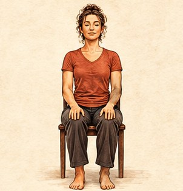
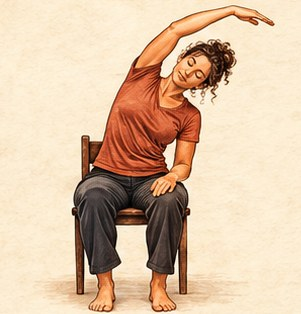
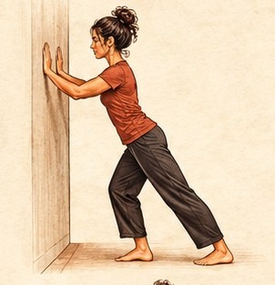
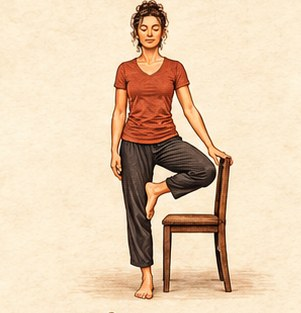

There is hope for every story.
No life is beyond the reach of God's grace. Inkarnation encourages incarcerated people, their families and the volunteers who walk alongside them.
“If anyone is in Christ, the new creation has come.”
2 Corinthians 5:17Daily encouragement
Scripture and reflections for every day.
Prayer and connection
Prayer, family resources and ways to serve.
Peace for body and mind
Gentle movement, breathing and meditation.
Wellness illustrations
Explore gentle, chair-friendly movements with step-by-step guidance.

Seated Mountain

Seated Side Stretch

Wall Push

Supported Tree
Daily Devotionals & Prayers
Every day has its own theme, Scripture reference, reflection, practical response and prayer. Choose any day or move through the year one day at a time.
Bible Studies
Explore the studies below, then follow the 365-day reading journey to read from Genesis through Revelation. The daily plan moves through all 1,189 chapters of the 66-book Bible in canonical order.
Identity in Christ
Read: Ephesians 1:3–14
What truth about God’s grace is hardest to believe today? Write one sentence about how your identity in Christ can shape your choices.
Freedom and forgiveness
Read: Romans 8:1–4; Psalm 51
How can you take responsibility without believing you are beyond forgiveness? What honest next step can you take?
Persevering hope
Read: Romans 5:1–5
How can endurance, character and hope grow in a difficult season? Who could encourage you?
Serving others
Read: Galatians 6:2–10
Name one practical way to carry another person’s burden while keeping healthy boundaries.
Prayer and honesty
Read: Psalm 13; Matthew 6:5–13
Bring your real feelings to God. What would an honest, simple prayer sound like today?
Wisdom for daily choices
Read: James 1:1–8; Proverbs 3:1–8
Where do you need wisdom? Identify one choice you can make with patience and integrity.
Read the Entire Bible in 365 Days
Choose a day to see that day's consecutive chapters. Read the chapters in order and mark your progress in a journal or on a printed checklist. Most days include three or four chapters.
Reading portions are chapter ranges, not a specific Bible translation. Use the translation available to you. If you miss a day, continue where you left off rather than giving up.
Letters of Hope
“I wanted you to know that you are not forgotten. I am praying you find strength for today and hope for tomorrow. One verse that encouraged me is Isaiah 41:10…”
Correspondence guidelines
- Use approved names and facility mailing procedures.
- Keep boundaries clear; do not share private financial information.
- Do not send cash, gifts or enclosures unless expressly permitted.
- Be patient: screening and delivery can take time.
Prayer Requests
We would be honored to pray with you. To share a prayer request, follow these steps:
- Open your email app.
- Start a new message addressed to the Inkarnation ministry email below.
- Write your prayer request. You may leave your name out if you prefer to remain anonymous.
- Press Send. Please allow time for a ministry volunteer to receive and read your message.
Inkarnationministry@gmail.com
You may also tap the email address above to open a new message. Please do not include addresses, booking or identification numbers, detailed medical information, financial information, or other highly sensitive details. Email is not an encrypted confidential-care channel. Do not use email for emergencies.
A prayer for today
God of mercy, give courage where there is fear, comfort where there is grief, wisdom for the next right step, and hope rooted in Your love. Amen.
Family Support
- Keep communication steady, kind and realistic.
- Learn approved visiting, phone and mail procedures from official sources.
- Give children age-appropriate, honest explanations.
- Build a support circle; one person need not carry everything.
- Make space for rest, boundaries and spiritual care.
“Carry each other’s burdens…”
Galatians 6:2Volunteer Center
Encouragement letters
Write through an approved ministry or facility process.
Prayer support
Pray for incarcerated people, families, staff and re-entry journeys.
Practical support
Help families find reputable community resources.
Complete required screening, training and facility orientation. Never contact a resident outside approved procedures.
Yoga & Meditation
General wellness only, not medical care or physical therapy. Move slowly; stop for pain, dizziness, numbness or shortness of breath. Use a chair and skip poses that feel unsafe. Follow facility rules.
16 gentle yoga poses
Box Breathing
Inhale 4, optional gentle hold 4, exhale 4, optional pause 4. Repeat for 1–3 minutes. Stop counting and breathe normally if uncomfortable or light-headed.
Inhale gently
- Inhale gently for 4 counts.
- Hold softly for 4 counts only if comfortable.
- Exhale slowly for 4 counts.
- Pause for 4 counts only if comfortable.
5-Minute Guided Christian Meditation
Read slowly, pausing between sentences, or reflect quietly for one minute per section.
Minute 1 — Become still
Sit comfortably. Let your shoulders soften. Notice the support beneath you. Breathe naturally. You do not have to solve everything in this moment.
Minute 2 — Receive peace
Remember Psalm 46:10: “Be still, and know that I am God.” Let the words settle. God is present with you here.
Minute 3 — Remember your worth
Your worst moment is not the whole of your story. You are made in God's image, worthy of dignity, truth and love. Let grace make room for honest growth.
Minute 4 — Release what you carry
Name one worry silently. Imagine placing it in God's hands. Ask for strength to take the next right step and courage to make amends where you can.
Minute 5 — Return with hope
Take one natural breath. Ask God to guide your words and actions today. Gently open your eyes when ready. Carry one small act of hope into the day. Amen.
Contact Inkarnation
For ministry questions, encouragement or volunteer inquiries:
Please do not email confidential legal, medical, financial or other sensitive information.
Support the Mission
Inkarnation is intended to be free to use. No payment processing or donation account is connected. Only give through a verified official ministry channel after independently confirming its legitimacy.